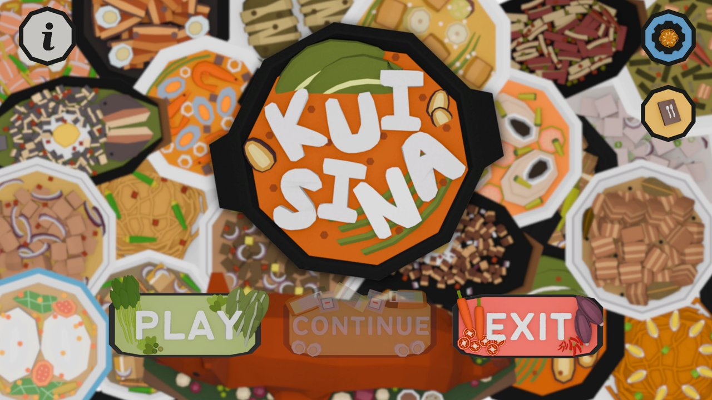
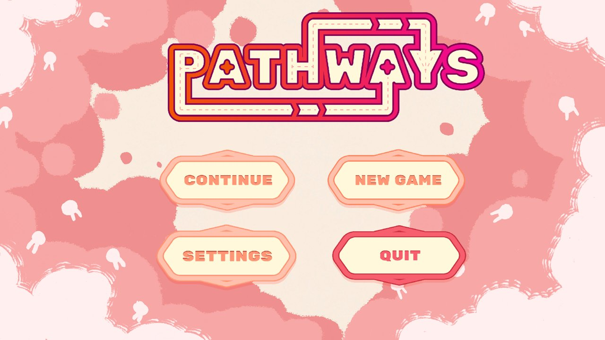

SLOP MACHINE
A chaotic little game about robbing strangers and feeding the coins into a slot machine. I was a programmer and the audio programmer, and handled QA.
Junior Unity Developer · QA
PRESS ENTER
© 2026 PRINCE LHARRIE CASTILLO
v2026.1 · ↑ ↓ to move
Each file is a project. Load one to see what I built and what I fixed.
A chaotic little game about robbing strangers and feeding the coins into a slot machine. I was a programmer and the audio programmer, and handled QA.

A fast-paced cooking game set in a Filipino karinderya. Cook and serve Filipino dishes solo or in 2-player couch co-op. I was a programmer and handled QA.

An interactive medical simulation. As Unity Developer, I tested the simulation's mechanics, fixed bugs in user pathways and UI feedback, and kept it stable across different hardware. I debugged C# with the team and documented decision-tree workflows.
Open to junior Unity developer and QA roles. Start a new file by getting in touch.
Junior Unity Developer · QA & Technical Support
Entertainment and Multimedia Computing graduate based in Metro Manila. I build and test interactive Unity applications, and I'm good at explaining technical problems in plain language, to developers and players alike.
What I bring to a team, from building in Unity to tracking down the bug.